JEE Main 2026 (Session 2), 8 Apr Shift 2: worked solutions for review
Questions and options are NTA’s own images; the green option is NTA’s final key. Every solution below was written by Claude
and checked against NTA’s final key. It is not NTA’s solution. Please mark anything unclear or wrong.
Q1 · Mathematics · MCQ · ID 691121526
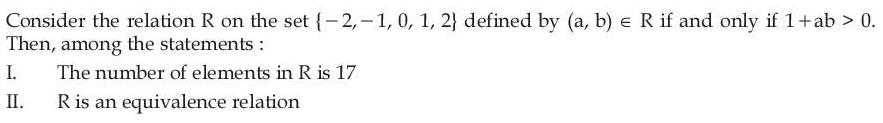
Hint 1: 1 + ab > 0 with integers means ab ≥ 0. Count those pairs. For II, look for a chain through 0.
Hint 2: Pairs with a = 0 or b = 0, plus pairs with a and b non-zero and of the same sign. For transitivity, try (−1, 0) and (0, 1).
What this tests: Counting a relation; checking an equivalence relation.
1. a = 0 or b = 0: 9 pairs. Both positive: 4. Both negative: 4. Total 17, so I is true.
2. (−1, 0) and (0, 1) are in R, but (−1, 1) gives 1 − 1 = 0, not > 0. Not transitive, so II is false.
Answer: (1)
If this felt hard: Revise 'Relations and Functions'. Zero is often the element that breaks transitivity.
Claude’s answer: 1 · NTA final key: 1 · agrees · Answer recomputed with SymPy (tools/verify_pyq_solutions.py)
Q2 · Mathematics · MCQ · ID 691121527
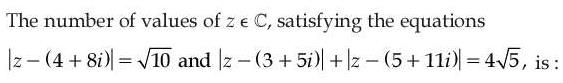
(1) 
(2) 
(3) 
(4) 
Hint 1: The first equation is a circle and the second an ellipse. Find the ellipse's centre, a and b.
Hint 2: Foci (3, 5) and (5, 11): centre (4, 8), 2c = √40. 2a = 4√5. Then b² = a² − c².
What this tests: Loci in the complex plane: circle and ellipse.
1. a = 2√5, c = √10, so b² = 20 − 10 = 10 and b = √10.
2. The circle has the same centre (4, 8) and radius √10 = b.
3. It touches the ellipse only at the two ends of the minor axis: 2 points.
Answer: (2)
If this felt hard: Revise 'Complex Numbers' (loci) and 'Conic Sections' (ellipse from the focal-distance definition).
Claude’s answer: 2 · NTA final key: 2 · agrees · Answer recomputed with SymPy (tools/verify_pyq_solutions.py)
Q3 · Mathematics · MCQ · ID 691121528
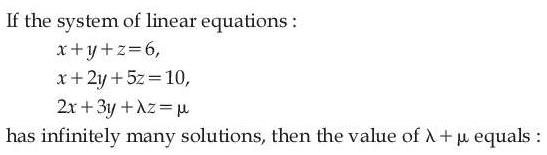
(1) 
Hint 1: For infinitely many solutions the coefficient determinant must be 0, and the system must stay consistent.
Hint 2: det = λ − 6. With λ = 6, check whether row 3 is a combination of rows 1 and 2.
What this tests: Consistency of a 3×3 linear system.
1. λ = 6. Row 1 + row 2 = (2, 3, 6), which is row 3's left side.
2. So μ must be 6 + 10 = 16.
3. λ + μ = 22.
Answer: (3)
If this felt hard: Revise 'Determinants' (solving systems, infinitely many solutions).
Claude’s answer: 3 · NTA final key: 3 · agrees · Answer recomputed with SymPy (tools/verify_pyq_solutions.py)
Q4 · Mathematics · MCQ · ID 691121529
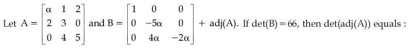
Hint 1: Write adj(A) entry by entry (transpose of the cofactor matrix), then add the given matrix.
Hint 2: adj(A) = [[15, 3, −6], [−10, 5α, 4], [8, −4α, 3α − 2]] and det A = 15α + 6.
What this tests: Adjoint of a matrix; det(adj A) = (det A)n−1.
1. B = [[16, 3, −6], [−10, 0, 4], [8, 0, α − 2]]. Expand along column 2: det B = −3(−10(α − 2) − 32) = 30α + 36.
2. 30α + 36 = 66 gives α = 1, so det A = 21.
3. det(adj A) = (det A)² = 441.
Answer: (3)
If this felt hard: Revise 'Determinants' (adjoint and its properties).
Claude’s answer: 3 · NTA final key: 3 · agrees · Answer recomputed with SymPy (tools/verify_pyq_solutions.py)
Q5 · Mathematics · MCQ · ID 691121530
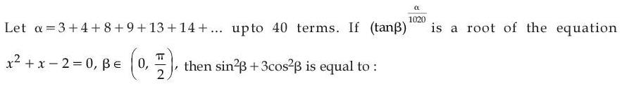
(1) 
(3) 
(4) 
Hint 1: Group the terms in pairs: (3 + 4), (8 + 9), (13 + 14), … What kind of sequence do the pair sums form?
Hint 2: Pair sums 7, 17, 27, … form an AP with difference 10; 40 terms make 20 pairs.
What this tests: AP sums; quadratic roots; trigonometric values.
1. α = (20/2)(2 × 7 + 19 × 10) = 2040, so α/1020 = 2.
2. (tan β)² is a root of x² + x − 2 = 0, i.e. 1 or −2. A square cannot be −2, so tan²β = 1 and β = π/4.
3. sin²β + 3cos²β = 1/2 + 3/2 = 2.
Answer: (1)
If this felt hard: Revise 'Sequences and Series' (grouping terms).
Claude’s answer: 1 · NTA final key: 1 · agrees · Answer recomputed with SymPy (tools/verify_pyq_solutions.py)
Q6 · Mathematics · MCQ · ID 691121531
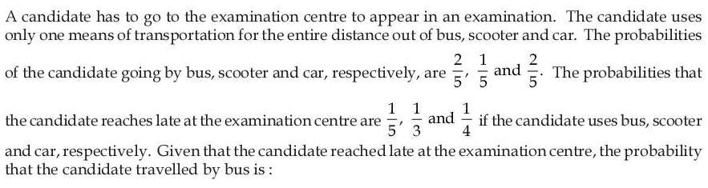
Hint 1: This is Bayes' theorem: P(bus | late) = P(bus and late)/P(late).
Hint 2: P(late) = (2/5)(1/5) + (1/5)(1/3) + (2/5)(1/4).
What this tests: Bayes' theorem.
1. P(late) = 2/25 + 1/15 + 1/10 = (24 + 20 + 30)/300 = 74/300.
2. P(bus and late) = 24/300.
3. P(bus | late) = 24/74 = 12/37.
Answer: (2)
If this felt hard: Revise 'Probability' (total probability and Bayes' theorem).
Claude’s answer: 2 · NTA final key: 2 · agrees · Answer recomputed with SymPy (tools/verify_pyq_solutions.py)
Q7 · Mathematics · MCQ · ID 691121532
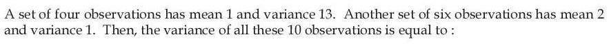
Hint 1: Recover Σx and Σx² for each group from its mean and variance.
Hint 2: Σx² = n(variance + mean²). Group 1: Σx = 4, Σx² = 56. Group 2: Σx = 12, Σx² = 30.
What this tests: Combined variance of two groups.
1. Combined: n = 10, Σx = 16, Σx² = 86.
2. Variance = 8.6 − 1.6² = 8.6 − 2.56 = 6.04.
Answer: (3)
If this felt hard: Revise 'Statistics'.
Claude’s answer: 3 · NTA final key: 3 · agrees · Answer recomputed with SymPy (tools/verify_pyq_solutions.py)
Q8 · Mathematics · MCQ · ID 691121533
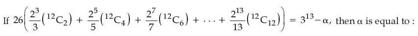
Hint 1: Absorb the 1/(2k + 1) into the binomial coefficient: C(12, r)/(r + 1) = C(13, r + 1)/13.
Hint 2: The sum becomes (1/13) Σ C(13, 2k + 1)22k+1 for k = 1 to 6. The full odd-index sum is ((1 + 2)13 − (1 − 2)13)/2.
What this tests: Binomial coefficient sums (odd terms, absorbing 1/(r + 1)).
1. Odd-index sum from k = 0: (313 + 1)/2. Remove the k = 0 term C(13, 1) × 2 = 26.
2. 26 × (1/13) × ((313 + 1)/2 − 26) = 313 + 1 − 52 = 313 − 51.
3. α = 51.
Answer: (3)
If this felt hard: Revise 'Binomial Theorem'. The identity C(n, r)/(r + 1) = C(n + 1, r + 1)/(n + 1) is worth remembering.
Claude’s answer: 3 · NTA final key: 3 · agrees · Answer recomputed with SymPy (tools/verify_pyq_solutions.py)
Q9 · Mathematics · MCQ · ID 691121534
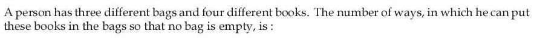
(1) 
(2) 
(3) 
(4) 
Hint 1: Each book chooses a bag: 3⁴ ways in all. Remove the ways that leave some bag empty.
Hint 2: Inclusion–exclusion: 3⁴ − C(3, 1)2⁴ + C(3, 2)1⁴.
What this tests: Distributing distinct objects into distinct boxes with none empty (onto functions).
1. 81 − 48 + 3 = 36.
Answer: (2)
If this felt hard: Revise 'Permutations and Combinations' (inclusion–exclusion).
Claude’s answer: 2 · NTA final key: 2 · agrees · Answer recomputed with SymPy (tools/verify_pyq_solutions.py)
Q10 · Mathematics · MCQ · ID 691121535
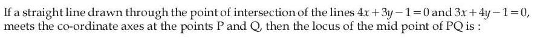
Hint 1: Find the common point of the two lines first.
Hint 2: They meet at (1/7, 1/7). Write the line as x/a + y/b = 1; the midpoint of PQ is (a/2, b/2).
What this tests: Locus of a midpoint; intercept form of a line.
1. 1/(7a) + 1/(7b) = 1.
2. Put a = 2h, b = 2k: 1/(14h) + 1/(14k) = 1, so h + k = 14hk.
3. Locus: x + y − 14xy = 0.
Answer: (2)
If this felt hard: Revise 'Straight Lines'.
Claude’s answer: 2 · NTA final key: 2 · agrees · Answer recomputed with SymPy (tools/verify_pyq_solutions.py)
Q11 · Mathematics · MCQ · ID 691121536
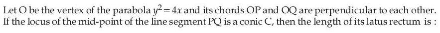
(1) 
(2) 
(3) 
(4) 
Hint 1: Take P(t1², 2t1) and Q(t2², 2t2). What does OP ⊥ OQ say about t1t2?
Hint 2: Slopes 2/t1 and 2/t2 multiply to −1, so t1t2 = −4. Midpoint: h = (t1² + t2²)/2, k = t1 + t2.
What this tests: Parametric points on a parabola; locus of a midpoint.
1. k² = t1² + t2² + 2t1t2 = 2h − 8.
2. Locus y² = 2(x − 4), a parabola with 4a = 2.
3. Latus rectum = 2.
Answer: (2)
If this felt hard: Revise 'Conic Sections' (parabola, parametric form).
Claude’s answer: 2 · NTA final key: 2 · agrees · Answer recomputed with SymPy (tools/verify_pyq_solutions.py)
Q12 · Mathematics · MCQ · ID 691121537
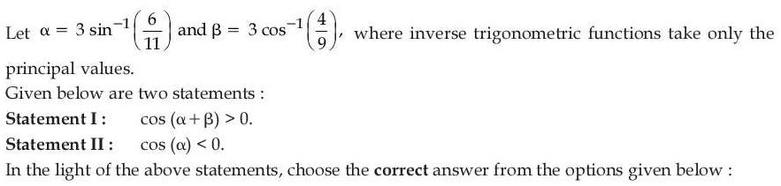
(1) 
(2) 
(3) 
(4) 
Hint 1: Estimate each angle in degrees. sin−1(6/11) is a bit more than 30°; cos−1(4/9) is a bit more than 60°.
Hint 2: sin−1(6/11) ≈ 33.1° and cos−1(4/9) ≈ 63.6°.
What this tests: Principal values of inverse trigonometric functions; signs of cosine.
1. α ≈ 99.3°, just past 90°, so cos α < 0: Statement II is true.
2. β ≈ 190.8°, so α + β ≈ 290.1°, in the fourth quadrant: cos(α + β) > 0. Statement I is true.
(Exact check: sin−1(6/11) > 30° since 6/11 > 1/2, and < 45°, so α is in (90°, 135°).)
Answer: (1)
If this felt hard: Revise 'Inverse Trigonometric Functions'. Bounding angles between known values is often enough.
Claude’s answer: 1 · NTA final key: 1 · agrees · Answer recomputed with SymPy (tools/verify_pyq_solutions.py)
Q13 · Mathematics · MCQ · ID 691121538
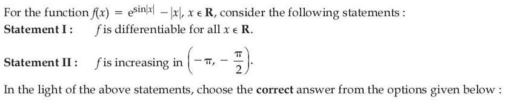
(1) 
(2) 
(3) 
(4) 
Hint 1: f is even. Only x = 0 needs care for differentiability. For II, write f on negative x without the modulus.
Hint 2: For x > 0: f'(x) = cos x esin x − 1, which → 0 as x → 0⁺. For x < 0: f(x) = e−sin x + x, f'(x) = 1 − cos x e−sin x.
What this tests: Differentiability with |x|; monotonicity.
1. Both one-sided derivatives at 0 are 0, so f is differentiable everywhere: I is true.
2. In (−π, −π/2), cos x < 0, so f'(x) = 1 − cos x e−sin x > 1 > 0: f is increasing. II is true.
Answer: (1)
If this felt hard: Revise 'Continuity and Differentiability' and 'Application of Derivatives'.
Claude’s answer: 1 · NTA final key: 1 · agrees · Answer recomputed with SymPy (tools/verify_pyq_solutions.py)
Q14 · Mathematics · MCQ · ID 691121539
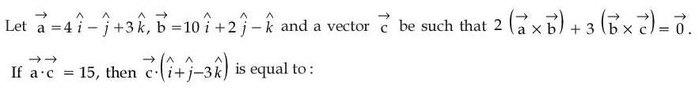
Hint 1: Rewrite the condition as b × (something) = 0. What does that say about the something?
Hint 2: 2(a × b) + 3(b × c) = b × (3c − 2a) = 0, so 3c − 2a = t b for some t.
What this tests: Vector equations with cross products (parallel vectors).
1. c = (2a + tb)/3. a·c = (2 × 26 + 35t)/3 = 15 gives t = −1/5.
2. a·(1, 1, −3) = −6 and b·(1, 1, −3) = 15.
3. c·(1, 1, −3) = (2(−6) − 15/5)/3 = −5.
Answer: (2)
If this felt hard: Revise 'Vector Algebra'. u × v = 0 means u is parallel to v.
Claude’s answer: 2 · NTA final key: 2 · agrees · Answer recomputed with SymPy (tools/verify_pyq_solutions.py)
Q15 · Mathematics · MCQ · ID 691121540
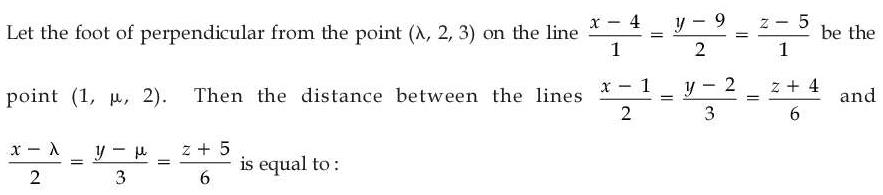
(4)
Hint 1: The foot lies on the line: find its parameter and μ. Then use perpendicularity to find λ.
Hint 2: Line point (4 + t, 9 + 2t, 5 + t). The vector from (λ, 2, 3) to the foot is perpendicular to (1, 2, 1). The final two lines are parallel, so use |AB × d|/|d|.
What this tests: Foot of a perpendicular; distance between parallel lines.
1. 4 + t = 1 gives t = −3, foot (1, 3, 2), μ = 3.
2. (λ − 1, −1, 1)·(1, 2, 1) = λ − 2 = 0, so λ = 2.
3. A(1, 2, −4), B(2, 3, −5), d = (2, 3, 6): AB × d = (9, −8, 1), length √146.
4. Distance = √146/7.
Answer: (3)
If this felt hard: Revise 'Three Dimensional Geometry'.
Claude’s answer: 3 · NTA final key: 3 · agrees · Answer recomputed with SymPy (tools/verify_pyq_solutions.py)
Q16 · Mathematics · MCQ · ID 691121541
(1)
(2)
(3)
(4)
Hint 1: Factor x⁴ + x² + 1 = (x² + x + 1)(x² − x + 1) and cancel.
Hint 2: The integrand becomes √x/√(x³ + 1). Substitute u = x3/2, so du = (3/2)√x dx.
What this tests: Simplifying an integrand; substitution leading to ∫ du/√(1 + u²).
1. Integral = (2/3)∫ du/√(1 + u²) = (2/3) ln(u + √(1 + u²)).
2. Limits: u from 0 to 2√2, and √(1 + 8) = 3.
3. Value = (2/3) ln(3 + 2√2).
Answer: (3)
If this felt hard: Revise 'Integrals'. x⁴ + x² + 1 = (x² + 1)² − x² is a factorisation worth knowing.
Claude’s answer: 3 · NTA final key: 3 · agrees · Answer recomputed with SymPy (tools/verify_pyq_solutions.py)
Q17 · Mathematics · MCQ · ID 691121542
(1)
(2)
(3)
(4)
Hint 1: Divide by x√(1 − x²) to get a linear equation dy/dx + P(x)y = Q(x).
Hint 2: dy/dx + y/x = cos−1x/√(1 − x²). The integrating factor is x. For ∫ x cos−1x/√(1 − x²) dx, put x = cos θ.
What this tests: Linear differential equation; integration by parts with an inverse function.
1. (xy)' = x cos−1x/√(1 − x²). With x = cos θ the integral is −∫θ cos θ dθ = −(θ sin θ + cos θ).
2. xy = −(√(1 − x²) cos−1x + x) + C. As x → 1, y → 1: 1 = −1 + C, so C = 2.
3. x = 1/2 (θ = π/3): y/2 = 2 − 1/2 − (√3/2)(π/3), so y = 3 − π/√3.
Answer: (1)
If this felt hard: Revise 'Differential Equations' (linear) and 'Integrals' (substitution x = cos θ, by parts).
Claude’s answer: 1 · NTA final key: 1 · agrees · Answer recomputed with SymPy (tools/verify_pyq_solutions.py)
Q18 · Mathematics · MCQ · ID 691121543
(1)
(2)
(3)
(4)
Hint 1: Compute f(f(x)) first. Then see what happens after four steps.
Hint 2: f²(x) = −1/x, so f⁴(x) = x. Then f26 = f². The line 2y = 2x − 3 meets y = 1/x where 2x² − 3x − 2 = 0.
What this tests: Iterating a function (periodic composition); area between curves.
1. g(x) = −f26(x) = 1/x.
2. The line y = x − 3/2 crosses y = 0 at x = 3/2 and meets y = 1/x at x = 2.
3. Area = ∫3/22 (x − 3/2) dx + ∫24 dx/x = 1/8 + loge2.
Answer: (1)
If this felt hard: Revise 'Relations and Functions' (composition) and 'Application of Integrals'.
Claude’s answer: 1 · NTA final key: 1 · agrees · Answer recomputed with SymPy (tools/verify_pyq_solutions.py)
Q19 · Mathematics · MCQ · ID 691121544
(1) 
(2) 
(3) 
(4) 
Hint 1: Continuity at π/2: find the right-hand limit using x = π/2 + h.
Hint 2: 1 − sin(π/2 + h) = 1 − cos h ≈ h²/2 and (π − 2x)² = 4h². So the limit is b/8.
What this tests: Continuity with a limit; integral of a modulus.
1. b/8 = 1/3, so b = 8/3 and 3b − 6 = 2.
2. x² + 2x − 3 = (x + 3)(x − 1) is negative on (0, 1) and positive on (1, 2).
3. ∫01 (3 − 2x − x²) dx = 5/3 and ∫12 (x² + 2x − 3) dx = 7/3. Total 4.
Answer: (4)
If this felt hard: Revise 'Continuity and Differentiability' and 'Integrals' (splitting at the sign change).
Claude’s answer: 4 · NTA final key: 4 · agrees · Answer recomputed with SymPy (tools/verify_pyq_solutions.py)
Q20 · Mathematics · MCQ · ID 691121545
(1) 
(2) 
(3)
(4) 
Hint 1: Major axis along y means the y² denominator is larger. f is decreasing: what does that do to the inequality?
Hint 2: f(3a + 15) > f(a² + 7a + 3) and f decreasing give 3a + 15 < a² + 7a + 3.
What this tests: Ellipse orientation; inequalities with a decreasing function.
1. a² + 4a − 12 > 0, i.e. (a + 6)(a − 2) > 0.
2. a < −6 or a > 2, so the excluded set is [−6, 2].
3. α² + β² = 36 + 4 = 40.
Answer: (2)
If this felt hard: Revise 'Conic Sections' and 'Linear Inequalities' / quadratic inequalities.
Claude’s answer: 2 · NTA final key: 2 · agrees · Answer recomputed with SymPy (tools/verify_pyq_solutions.py)
Q21 · Mathematics · Numerical · ID 691121546
Hint 1: Factor 2x² + 5x + 3 = (2x + 3)(x + 1) and x² + 2x + 1 = (x + 1)². Then put t = logx+1(2x + 3).
Hint 2: The equation becomes 1 + t = 4 − 2/t, i.e. t² − 3t + 2 = 0.
What this tests: Logarithmic equations with variable bases (domain checks).
1. t = 1: 2x + 3 = x + 1, x = −2, but the base x + 1 = −1 is not allowed.
2. t = 2: 2x + 3 = (x + 1)², so x² = 2.
3. Bases must be positive and not 1: x > −1, x ≠ 0. Only x = √2 works.
4. Sum of squares = 2.
Answer: 2
If this felt hard: Revise 'Logarithms' (change of base) and check domain conditions at the end.
Claude’s answer: 2 · NTA final key: 2 · agrees · Answer recomputed with SymPy (tools/verify_pyq_solutions.py)
Q22 · Mathematics · Numerical · ID 691121547
Hint 1: Use cot(B − A) = (cot A cot B + 1)/(cot A − cot B) with B − A = 2π/3.
Hint 2: cot A cot B + 1 = cot(2π/3)(cot A − cot B) = −(1/√3)(cot(x − π/3) − cot(x + π/3)).
What this tests: Integration using a cotangent difference identity.
1. Integral = −(1/√3)[ln|sin(x − π/3)| − ln|sin(x + π/3)|] from π/6 to π/4.
2. At π/4: ln(sin 15°/sin 75°) = ln(2 − √3). At π/6: ln((1/2)/1).
3. Difference = ln(4 − 2√3) = 2 ln(√3 − 1). So α = −2/√3.
4. 9α² = 12.
Answer: 12
If this felt hard: Revise 'Trigonometric Functions' (compound angles) and 'Integrals'.
Claude’s answer: 12 · NTA final key: 12 · agrees · Answer recomputed with SymPy (tools/verify_pyq_solutions.py)
Q23 · Mathematics · Numerical · ID 691121548
Hint 1: L1 is perpendicular to both direction vectors, so it is along their cross product.
Hint 2: d2 = (1, 2, 2), d3 = (2, 2, 1), d2 × d3 = (−2, 3, −2). Find where s(−2, 3, −2) meets L2.
What this tests: Lines in 3D: common perpendicular direction, intersection, distance.
1. 3 + t = −2s and 2t + 4 = −2s give t = −1, s = −1. Intersection P = (2, −3, 2).
2. On L3: Q = (3 + 2s, 3 + 2s, 2 + s). |PQ|² = 9s² + 28s + 37 = 17, so s = −2 or −10/9.
3. a = 3 + 2s is an integer only for s = −2: Q = (−1, −1, 0).
4. (a + b + c)² = 4.
Answer: 4
If this felt hard: Revise 'Three Dimensional Geometry'.
Claude’s answer: 4 · NTA final key: 4 · agrees · Answer recomputed with SymPy (tools/verify_pyq_solutions.py)
Q24 · Mathematics · Numerical · ID 691121549
Hint 1: Let the foot be M(h, k). Then the chord is hx + ky = h² + k². Homogenise the circle with this line.
Hint 2: A pair of lines through the origin is perpendicular when (coefficient of x²) + (coefficient of y²) = 0.
What this tests: Chord subtending a right angle at the origin (homogenisation).
1. Write p = h² + k². Homogenised: x² + y² − (6x + 8y)(hx + ky)/p − 11(hx + ky)²/p² = 0.
2. Sum of x² and y² coefficients: 2 − (6h + 8k)/p − 11/p = 0.
3. So 2(h² + k²) − 6h − 8k − 11 = 0: x² + y² − 3x − 4y − 11/2 = 0.
4. α + β + 2γ = 3 + 4 + 11 = 18.
Answer: 18
If this felt hard: Revise 'Straight Lines' (pair of lines) and 'Conic Sections' (circle, chord with a given foot).
Claude’s answer: 18 · NTA final key: 18 · agrees · Answer recomputed with SymPy (tools/verify_pyq_solutions.py)
Q25 · Mathematics · Numerical · ID 691121550
Hint 1: First sum the GP inside the logarithm. You will see log23 appear.
Hint 2: 2 + 2/3 + 2/9 + … = 3, so log2f = log23 × log3(1 + f(x)/f(1/x)) = log2(1 + f(x)/f(1/x)).
What this tests: Functional equation f(x)f(1/x) = f(x) + f(1/x); GP sum; change of base.
1. f(x) = 1 + f(x)/f(1/x), i.e. f(x)f(1/x) = f(x) + f(1/x). Polynomials with this property: f(x) = 1 ± xⁿ.
2. f(6) = 37 = 1 + 6², so f(x) = 1 + x².
3. Σn=110 (1 + n²) = 10 + 385 = 395.
Answer: 395
If this felt hard: Revise 'Relations and Functions' (standard functional equations) and 'Sequences and Series'.
Claude’s answer: 395 · NTA final key: 395 · agrees · Answer recomputed with SymPy (tools/verify_pyq_solutions.py)
Q26 · Physics · MCQ · ID 691121551
(1)
(2)
(3)
(4)
Hint 1: The new unit is the distance light travels in one second. How many seconds does light take here?
Hint 2: 6 min 40 s = 400 s.
What this tests: Units of length defined through the speed of light.
1. Distance = 400 × (distance light covers in 1 s) = 400α.
Answer: (2)
If this felt hard: Revise 'Units and Measurements'.
Claude’s answer: 2 · NTA final key: 2 · agrees · Answer recomputed by script (tools/verify_pyq_solutions.py)
Note: The question calls α "equal to the speed of light"; it means the distance light travels in 1 s.
Q27 · Physics · MCQ · ID 691121552
(1)
(2)
(3)
(4)
Hint 1: Write the dimensions of H (A/m), ε, E and x, t in M, L, T, A. Then match powers.
Hint 2: [H] = L−1A, [ε] = M−1L−3T⁴A², [E] = MLT−3A−1.
What this tests: Dimensional analysis with electromagnetic quantities.
1. Try p = q = r = s = 1: L × M−1L−3T⁴A² × MLT−3A−1 ÷ T = M⁰L−1T⁰A.
2. That equals [H]. (Physically: H ~ ε E x/t, from the displacement current.)
Answer: (1)
If this felt hard: Revise 'Units and Measurements' (dimensions of ε and E).
Claude’s answer: 1 · NTA final key: 1 · agrees · Answer recomputed with SymPy (tools/verify_pyq_solutions.py)
Q28 · Physics · MCQ · ID 691121553
(1)
(2)
(3)
(4)
Hint 1: In the car's frame, the bob feels mg down and a centrifugal force mv²/r sideways.
Hint 2: tan θ = v²/(rg), with v = 54 km/h = 15 m/s.
What this tests: Pendulum in a turning car (circular motion).
1. tan θ = 225/(20 × 10) = 1.125.
2. θ = tan−1(1.125).
Answer: (3)
If this felt hard: Revise 'Laws of Motion' (circular motion, pseudo force). Convert km/h to m/s first.
Claude’s answer: 3 · NTA final key: 3 · agrees · Answer recomputed by script (tools/verify_pyq_solutions.py)
Q29 · Physics · MCQ · ID 691121554
(1)
(2)
(3)
(4)
Hint 1: A stone dropped from a rising balloon starts with the balloon's velocity: 10 m/s upward.
Hint 2: Take up as positive: −75 = 10t − 5t².
What this tests: Relative motion; free fall with initial velocity.
1. t² − 2t − 15 = 0, so t = 5 s.
2. Balloon height = 75 + 10 × 5 = 125 m.
Answer: (4)
If this felt hard: Revise 'Motion in a Straight Line'. A common slip is to take the stone's initial velocity as 0.
Claude’s answer: 4 · NTA final key: 4 · agrees · Answer recomputed by script (tools/verify_pyq_solutions.py)
Q30 · Physics · MCQ · ID 691121555
(1) 
(2)
(3) 
(4)
Hint 1: A silvered lens acts as a mirror. The image coincides with the object when the object is at the centre of curvature of this equivalent mirror.
Hint 2: Power of the system = 2Plens + Pmirror. Lens: 1/f = 0.5 × (2/20). Silvered surface: concave mirror with f = R/2 = 10 cm.
What this tests: Silvered lens as an equivalent mirror.
1. Lens f = 20 cm. P = 2/20 + 1/10 = 1/5, so the equivalent concave mirror has F = 5 cm.
2. Object at 2F = 10 cm.
Answer: (1)
If this felt hard: Revise 'Ray Optics and Optical Instruments' (silvered lenses).
Claude’s answer: 1 · NTA final key: 1 · agrees · Answer recomputed by script (tools/verify_pyq_solutions.py)
Q31 · Physics · MCQ · ID 691121556
(1)
(2) 
(3)
(4) 
Hint 1: Same speed and same range means the angles are θ and 90° − θ. Multiply the two flight times.
Hint 2: T1T2 = (2u sin θ/g)(2u cos θ/g) = 2R/g.
What this tests: Projectile motion: complementary angles.
1. R = gT1T2/2 = 10 × 5 × 10/2 = 250 m.
Answer: (1)
If this felt hard: Revise 'Motion in a Plane'.
Claude’s answer: 1 · NTA final key: 1 · agrees · Answer recomputed by script (tools/verify_pyq_solutions.py)
Q32 · Physics · MCQ · ID 691121557
(1) 
(2) 
(3) 
(4)
Hint 1: Friction acts backwards at the contact point: it slows the centre down and speeds up the spin.
Hint 2: v = v0 − μgt. α = μmgR/(mR²/2) = 2μg/R, so ω = v0/(4R) + 2μgt/R. Rolling starts when v = ωR.
What this tests: Slipping to pure rolling under kinetic friction.
1. v0 − μgt = v0/4 + 2μgt.
2. 3μgt = 3v0/4, so t = v0/(4μg).
3. t = 49/(4 × 0.25 × 9.8) = 5 s.
Answer: (2)
If this felt hard: Revise 'System of Particles and Rotational Motion'.
Claude’s answer: 2 · NTA final key: 2 · agrees · Answer recomputed with SymPy (tools/verify_pyq_solutions.py)
Note: Takes the initial spin in the same sense as rolling (forward).
Q33 · Physics · MCQ · ID 691121558
(1) 
(2)
(3)
(4) 
Hint 1: Use continuity A1v1 = A2v2, then Bernoulli for the same height.
Hint 2: 1.0 cm² = 100 mm², so vB = 5 × 0.1 = 0.5 m/s. ΔP = (1/2)ρ(vB² − vA²).
What this tests: Equation of continuity and Bernoulli's principle.
1. ΔP = 0.5 × 600 × (0.25 − 0.01) = 72 Pa.
Answer: (4)
If this felt hard: Revise 'Mechanical Properties of Fluids'. Watch the unit change cm² → mm².
Claude’s answer: 4 · NTA final key: 4 · agrees · Answer recomputed by script (tools/verify_pyq_solutions.py)
Q34 · Physics · MCQ · ID 691121559
(1) 
(2) 
(3)
(4) 
Hint 1: Volume is conserved when the drop breaks up. How does terminal velocity depend on radius?
Hint 2: 64 droplets of radius r: 64r³ = R³, so r = R/4. Terminal velocity ∝ r².
What this tests: Terminal velocity (Stokes' law).
1. v1/v2 = (R/r)² = 16.
Answer: (4)
If this felt hard: Revise 'Mechanical Properties of Fluids' (viscosity).
Claude’s answer: 4 · NTA final key: 4 · agrees · Answer recomputed by script (tools/verify_pyq_solutions.py)
Q35 · Physics · MCQ · ID 691121560
(1)
(2) 
(3)
(4)
Hint 1: Heat supplied = ΔU + work done by the gas. Which CV applies to a diatomic gas with translational and rotational modes?
Hint 2: CV = (5/2)R, so ΔU = nCVΔT. The piston does work W = P × A × Δx against the atmosphere.
What this tests: First law of thermodynamics for a gas heated at constant pressure.
1. ΔU = 1 × 2.5 × 8.3 × 1.2 ≈ 24.9 J.
2. W = 10⁵ × 4 × 10−4 × 0.025 = 1 J.
3. The numbers in the question do not fit together exactly (for 1 mol, PΔV should equal RΔT ≈ 10 J), so no option is exact. The heat is about 25 J; NTA's final key accepts both 24.8 and 25.
Answer: (2)
If this felt hard: Revise 'Thermodynamics' and 'Kinetic Theory' (degrees of freedom, CV of a diatomic gas).
Claude’s answer: 2 · NTA final key: 1 · DISAGREES: flag for the owner · Theory question: not computable, needs a teacher’s review
Note: Flawed data: 1 mol heated by 1.2 °C at 100 kPa should do about 10 J of work, but the piston data give 1 J. NTA accepted options 1 (24.8) and 2 (25). Worth a teacher look.
Q36 · Physics · MCQ · ID 691121561
(1)
(2)
(3)
(4)
Hint 1: For an adiabatic process, ΔU = −W = (P2V2 − P1V1)/(γ − 1). Find P2 first.
Hint 2: Monoatomic: γ = 5/3. P2 = P(V/27V)5/3 = P/243.
What this tests: Adiabatic process: change in internal energy.
1. P2V2 = (P/243)(27V) = PV/9.
2. ΔU = (PV/9 − PV)/(2/3) = −(8/9)(3/2)PV = −(4/3)PV.
Answer: (3)
If this felt hard: Revise 'Thermodynamics' (adiabatic relations).
Claude’s answer: 3 · NTA final key: 3 · agrees · Answer recomputed with SymPy (tools/verify_pyq_solutions.py)
Q37 · Physics · MCQ · ID 691121562
(1) 
(2) 
(3)
(4) 
Hint 1: What happens to the spring constant when a spring is cut in half?
Hint 2: k ∝ 1/length, so the half spring has 2k. Frequency ∝ √k.
What this tests: Spring constant of a cut spring; SHM frequency.
1. ν2/ν1 = √(2k/k) = √2.
Answer: (3)
If this felt hard: Revise 'Oscillations'.
Claude’s answer: 3 · NTA final key: 3 · agrees · Answer recomputed by script (tools/verify_pyq_solutions.py)
Q38 · Physics · MCQ · ID 691121563
(1)
(2)
(3)
(4)
Hint 1: Find the energy of one photon from the power and the photon rate.
Hint 2: E = P/N, then λ = hc/E.
What this tests: Photon energy and the EM spectrum.
1. E = 15000/(2.5 × 1022) = 6 × 10−19 J.
2. λ = (6.6 × 10−34 × 3 × 10⁸)/(6 × 10−19) = 3.3 × 10−7 m = 330 nm.
3. Below 400 nm: ultraviolet.
Answer: (4)
If this felt hard: Revise 'Dual Nature of Radiation and Matter' and 'Electromagnetic Waves' (wavelength ranges).
Claude’s answer: 4 · NTA final key: 4 · agrees · Answer recomputed by script (tools/verify_pyq_solutions.py)
Q39 · Physics · MCQ · ID 691121564
(1)
(2)
(3)
(4)
Hint 1: Torque on a loop: τ = m × B, with m = IA n̂.
Hint 2: m = 100√2 × π(0.02)² × (î + k̂)/√2 = 0.1256(î + k̂). Then (î + k̂) × (3î + 2k̂).
What this tests: Torque on a current loop (magnetic moment).
1. (î + k̂) × (3î + 2k̂) = 2(î × k̂) + 3(k̂ × î) = −2ĵ + 3ĵ = ĵ.
2. τ = 0.1256 × 4 × 10−3 ĵ = 5.024 × 10−4 ĵ = 5024 × 10−7 ĵ.
Answer: (4)
If this felt hard: Revise 'Moving Charges and Magnetism'. Cross products of unit vectors: î × k̂ = −ĵ.
Claude’s answer: 4 · NTA final key: 4 · agrees · Answer recomputed by script (tools/verify_pyq_solutions.py)
Q40 · Physics · MCQ · ID 691121565
(1)
(2) 
(3)
(4) 
Hint 1: Find the self-inductance of the solenoid, then ε = L dI/dt.
Hint 2: L = μ0n²Al with n = 1000 per metre, A = 5 × 10−4 m², l = 0.3 m.
What this tests: Self-inductance of a solenoid; induced emf.
1. L = 4π × 10−7 × 10⁶ × 5 × 10−4 × 0.3 = 0.6π × 10−4 H.
2. dI/dt = 2/3.14 A/s.
3. ε = 0.6π × 10−4 × 2/π = 1.2 × 10−4 V = 12 × 10−5 V.
Answer: (2)
If this felt hard: Revise 'Electromagnetic Induction'. Convert turns per cm to turns per metre.
Claude’s answer: 2 · NTA final key: 2 · agrees · Answer recomputed by script (tools/verify_pyq_solutions.py)
Q41 · Physics · MCQ · ID 691121566
(1)
(2)
(3)
(4)
Hint 1: Force on q2 points along the vector from q1 to q2 (times the sign of q1q2).
Hint 2: r = r2 − r1 = (−1, −2, −2), |r| = 3. F = kq1q2 r/|r|³.
What this tests: Coulomb's law in vector form.
1. kq1q2 = 9 × 10⁹ × 3 × 10−6 × (−4 × 10−6) = −0.108.
2. F = −0.108 × (−1, −2, −2)/27 = 0.004(1, 2, 2) = (4î + 8ĵ + 8k̂) × 10−3 N.
3. It points towards q1, as expected for attraction.
Answer: (2)
If this felt hard: Revise 'Electric Charges and Fields'.
Claude’s answer: 2 · NTA final key: 2 · agrees · Answer recomputed by script (tools/verify_pyq_solutions.py)
Q42 · Physics · MCQ · ID 691121567
(1)
(2)
(3)
(4) 
Hint 1: Measure both angles from the normal (the vertical line). Write sin α and sin β from the vector components.
Hint 2: sin α = 2/√13 and sin β = C/√(C² + 16). Snell: 1 × sin α = 1.5 × sin β.
What this tests: Snell's law with direction vectors.
1. 4/13 = 2.25C²/(C² + 16).
2. 4C² + 64 = 29.25C², so C² ≈ 2.53 and C ≈ 1.6.
Answer: (1)
If this felt hard: Revise 'Ray Optics and Optical Instruments' (refraction).
Claude’s answer: 1 · NTA final key: 1 · agrees · Answer recomputed by script (tools/verify_pyq_solutions.py)
Q43 · Physics · MCQ · ID 691121568
(1)
(2)
(3)
(4)
Hint 1: Write Einstein's equation for both wavelengths. λ2 = λ1/2 means the photon energy doubles.
Hint 2: K1 = hc/λ1 − φ and K2 = 2hc/λ1 − φ. Eliminate hc/λ1.
What this tests: Photoelectric equation.
1. hc/λ1 = K1 + φ.
2. K2 = 2(K1 + φ) − φ = 2K1 + φ.
3. φ = K2 − 2K1.
Answer: (4)
If this felt hard: Revise 'Dual Nature of Radiation and Matter'.
Claude’s answer: 4 · NTA final key: 4 · agrees · Answer recomputed with SymPy (tools/verify_pyq_solutions.py)
Q44 · Physics · MCQ · ID 691121569
(1)
(2)
(3)
(4)
Hint 1: In α-decay the daughter nucleus recoils, so the α-particle does not get all of Q. Use momentum conservation.
Hint 2: Kα = Q(A − 4)/A, where A is the mass number of the parent.
What this tests: Kinetic energy of α-particles (recoil of the daughter).
1. A: K = 196/200 MeV. B: K = 208/212 MeV.
2. Ratio = (196 × 212)/(200 × 208) = 41552/41600 = 2597/2600.
Answer: (3)
If this felt hard: Revise 'Nuclei' (α-decay energetics).
Claude’s answer: 3 · NTA final key: 3 · agrees · Answer recomputed with SymPy (tools/verify_pyq_solutions.py)
Q45 · Physics · MCQ · ID 691121570
(1)
(2)
(3)
(4)
Hint 1: Write the Boolean expression for each AND gate (one input has a bubble), then OR them.
Hint 2: Top AND: A·B. Bottom AND: Ā·B. Y = AB + ĀB.
What this tests: Logic gates and Boolean simplification; timing diagrams.
1. Y = B(A + Ā) = B.
2. So Y copies B: 1 from t = 0 to 2, 0 from 2 to 3.
Answer: (2)
If this felt hard: Revise 'Semiconductor Electronics' (logic gates).
Claude’s answer: 2 · NTA final key: 2 · agrees · Answer recomputed by script (tools/verify_pyq_solutions.py)
Note: Figure reading: the bubble is on the A input of the lower AND gate; B feeds both gates.
Q46 · Physics · Numerical · ID 691121571
Hint 1: Use the resistance to find the plate area, then the capacitance to find εr.
Hint 2: R = ρd/A gives A. C = ε0εrA/d gives εr.
What this tests: Capacitance and resistance of the same slab.
1. A = ρd/R = 1013 × 0.885 × 10−3/(17.7 × 1014) = 5 × 10−6 m².
2. εr = Cd/(ε0A) = 10−6 × 0.885 × 10−3/(8.85 × 10−12 × 5 × 10−6) = 2 × 10⁷.
3. α = 2.
Answer: 2
If this felt hard: Revise 'Electrostatic Potential and Capacitance' and 'Current Electricity' (resistivity).
Claude’s answer: 2 · NTA final key: 2 · agrees · Answer recomputed by script (tools/verify_pyq_solutions.py)
Q47 · Physics · Numerical · ID 691121572
Hint 1: Use the Rayleigh criterion for a circular aperture.
Hint 2: θ = 1.22λ/D, so D = 1.22λ/θ.
What this tests: Resolving power of a telescope.
1. D = 1.22 × 500 × 10−9/(3 × 10−7) = 2.033 m.
2. ≈ 203 cm.
Answer: 203
If this felt hard: Revise 'Wave Optics' (resolving power).
Claude’s answer: 203 · NTA final key: 203 · agrees · Answer recomputed by script (tools/verify_pyq_solutions.py)
Q48 · Physics · Numerical · ID 691121573
Hint 1: The velocity has a part along B and a part across B. The particle moves on a helix.
Hint 2: Period T = 2πm/(qB). Distance along k̂ = v∥ × (number of turns) × T.
What this tests: Helical motion of a charge in a magnetic field.
1. T = 2π × 5 × 10−6/(5π × 10−6 × 0.1) = 20 s.
2. v∥ = 2 × 10−2 m/s.
3. Distance = 0.02 × 5 × 20 = 2 m.
Answer: 2
If this felt hard: Revise 'Moving Charges and Magnetism'. Convert 5 mg to kg.
Claude’s answer: 2 · NTA final key: 2 · agrees · Answer recomputed by script (tools/verify_pyq_solutions.py)
Q49 · Physics · Numerical · ID 691121574
Hint 1: In steady state no current flows into the capacitor. Remove its branch and simplify the network.
Hint 2: The 12 Ω is directly across the battery. The rest: 5 Ω, then (10 Ω in parallel with 4 + 4 + 2 = 10 Ω), then 2 Ω, all in series.
What this tests: Capacitor in a DC circuit at steady state.
1. Series total = 5 + 5 + 2 = 12 Ω, so the current is 1 A.
2. It splits equally: 0.5 A through the 4 Ω, 4 Ω, 2 Ω branch.
3. The capacitor is across the vertical 4 Ω (the 10 Ω before it carries no current): V = 0.5 × 4 = 2 V.
4. Q = 100 μF × 2 V = 200 μC.
Answer: 200
If this felt hard: Revise 'Current Electricity' and 'Electrostatic Potential and Capacitance'.
Claude’s answer: 200 · NTA final key: 200 · agrees · Answer recomputed by script (tools/verify_pyq_solutions.py)
Note: Figure reading of the network as described in hint 2.
Q50 · Physics · Numerical · ID 691121575
Hint 1: Distance in the n-th second: sn = u + a(n − 1/2). Find each acceleration.
Hint 2: 104 = 5 + 4.5a1 and 129 = 12 + 4.5a2.
What this tests: Distance in the n-th second; momentum.
1. a1 = 22 m/s², a2 = 26 m/s².
2. After 10 s: v1 = 225 m/s, v2 = 272 m/s.
3. p1/p2 = (3.4 × 225)/(2.5 × 272) = 765/680 = 9/8. x = 9.
Answer: 9
If this felt hard: Revise 'Motion in a Straight Line'.
Claude’s answer: 9 · NTA final key: 9 · agrees · Answer recomputed by script (tools/verify_pyq_solutions.py)
Q51 · Chemistry · MCQ · ID 691121576
(1)
(2)
(3) 
(4)
Hint 1: Convert each mass to moles of substance (all come out as simple numbers), then multiply by atoms per formula unit.
Hint 2: H2O: 18, H2SO4: 98, C: 12, NaCl: 58.5 g/mol. Atoms per unit: 3, 7, 1, 2.
What this tests: Mole concept: counting atoms.
1. A: 1.8 mg water = 10−4 mol × 3 = 3 × 10−4 NA (III).
2. B: 9.8 mg H2SO4 = 10−4 mol × 7 = 7 × 10−4 NA (IV).
3. C: 1.8 mg C = 1.5 × 10−4 NA (II).
4. D: 5.85 mg NaCl = 10−4 mol × 2 = 2 × 10−4 NA (I).
Answer: (3)
If this felt hard: Revise 'Some Basic Concepts of Chemistry'. Remember mg → g.
Claude’s answer: 3 · NTA final key: 3 · agrees · Answer recomputed by script (tools/verify_pyq_solutions.py)
Q52 · Chemistry · MCQ · ID 691121577
(1) 
(2) 
(3) 
(4) 
Hint 1: Take 100 g of solution: 30 g methanol and 70 g CCl4.
Hint 2: Moles: methanol 30/32, CCl4 70/154. In the mixture, methanol's hydrogen bonds are partly broken.
What this tests: Mole fraction from mass percent; deviations from Raoult's law.
1. n(CH3OH) = 0.9375, n(CCl4) = 0.4545.
2. x(CCl4) = 0.4545/1.392 ≈ 0.33: Statement I is true.
3. Weaker interactions in the mixture than in pure methanol mean a higher vapour pressure: positive deviation. Statement II is true.
Answer: (1)
If this felt hard: Revise 'Solutions' (non-ideal solutions).
Claude’s answer: 1 · NTA final key: 1 · agrees · Answer recomputed by script (tools/verify_pyq_solutions.py)
Q53 · Chemistry · MCQ · ID 691121578
(1)
(2)
(3)
(4)
Hint 1: Count the valence electrons on Br in each ion, then use VSEPR.
Hint 2: BrF2⁺: 7 − 1 = 6 electrons, 2 bonds, 2 lone pairs. BrF4⁻: 7 + 1 = 8 electrons, 4 bonds, 2 lone pairs.
What this tests: VSEPR shapes of interhalogen ions.
1. BrF2⁺: 4 electron pairs, 2 of them lone: bent.
2. BrF4⁻: 6 electron pairs, 2 lone pairs opposite each other: square planar.
Answer: (1)
If this felt hard: Revise 'Chemical Bonding and Molecular Structure' (VSEPR).
Claude’s answer: 1 · NTA final key: 1 · agrees · Theory question: not computable, needs a teacher’s review
Q54 · Chemistry · MCQ · ID 691121579
(1)
(2)
(3)
(4)
Hint 1: Recall Kb and Kf for water, and how benzoic acid dimerises.
Hint 2: For water Kb = 0.52 and Kf = 1.86 K kg/mol. Benzoic acid forms a cyclic dimer held by two hydrogen bonds.
What this tests: Colligative properties; association of benzoic acid.
1. A: Kb < Kf, so A is not correct.
2. B: for the same molality ΔTb < ΔTf, so B is not correct.
3. C: osmotic pressure is the preferred method for proteins and polymers: correct.
4. D: the dimer shown has one hydrogen bond and a wrong structure; the real dimer is cyclic with two O–H···O bonds. Not correct.
5. A, B and D are not correct.
Answer: (3)
If this felt hard: Revise 'Solutions' (colligative properties, abnormal molar mass).
Claude’s answer: 3 · NTA final key: 3 · agrees · Theory question: not computable, needs a teacher’s review
Q55 · Chemistry · MCQ · ID 691121580
(1)
(2)
(3)
(4)
Hint 1: Build the target reaction from the two given ones. Reversing a reaction inverts K; halving it takes the square root.
Hint 2: Reverse half of reaction 1: (1/2)x2 + (1/2)y2 ⇌ xy, with K = K1−1/2. Then add reaction 2.
What this tests: Combining equilibrium constants.
1. K1−1/2 = 1/√(2.5 × 10⁵) = 1/500 = 2 × 10−3.
2. K3 = 2 × 10−3 × 5 × 10−3 = 1.0 × 10−5.
Answer: (3)
If this felt hard: Revise 'Equilibrium'.
Claude’s answer: 3 · NTA final key: 3 · agrees · Answer recomputed with SymPy (tools/verify_pyq_solutions.py)
Q56 · Chemistry · MCQ · ID 691121581
(1)
(2)
(3)
(4)
Hint 1: Electrode potentials do not add directly. Add the ΔG° values instead (ΔG° = −nFE°).
Hint 2: Fe³⁺ + 3e⁻ → Fe: ΔG° = −3FY. Fe²⁺ + 2e⁻ → Fe: ΔG° = −2FX. Subtract to get Fe³⁺ + e⁻ → Fe²⁺.
What this tests: Combining electrode potentials through ΔG°.
1. ΔG° = −3FY − (−2FX) = −F(3Y − 2X).
2. With n = 1, E° = 3Y − 2X.
Answer: (2)
If this felt hard: Revise 'Electrochemistry'. A common slip is to subtract the potentials directly (Y − X).
Claude’s answer: 2 · NTA final key: 2 · agrees · Answer recomputed with SymPy (tools/verify_pyq_solutions.py)
Q57 · Chemistry · MCQ · ID 691121582
(1) 
(2) 
(3) 
(4) 
Hint 1: Statement I: use the Arrhenius equation for two temperatures. Statement II: how does t1/2 of a first-order reaction depend on [A]0?
Hint 2: ln(k2/k1) = (Ea/R)(1/T1 − 1/T2), with Ea = 12.6 × 4.2 × 1000 J/mol. First order: t1/2 = 0.693/k.
What this tests: Arrhenius equation; half-life of first-order reactions.
1. Ea/R = 52920/8.314 ≈ 6365 K. 1/298 − 1/308 ≈ 1.09 × 10−4. ln(k2/k1) ≈ 0.693, so k doubles: Statement I is true.
2. First-order t1/2 does not depend on [A]0, so the graph should be a horizontal line, not a rising one. Statement II is false.
Answer: (3)
If this felt hard: Revise 'Chemical Kinetics'. A rising t1/2 vs [A]0 line is zero order.
Claude’s answer: 3 · NTA final key: 3 · agrees · Answer recomputed with SymPy (tools/verify_pyq_solutions.py)
Q58 · Chemistry · MCQ · ID 691121583
(1)
(2)
(3) 
(4)
Hint 1: With n = 2 these are Be, B, N and Ne. Which one is the noble gas? Which two are the well-known exceptions?
Hint 2: Be (2s²) has a higher IE than B (2s²2p¹), because B's 2p electron is easier to remove. N (half-filled 2p) is high. Ne is highest.
What this tests: Ionisation enthalpy across period 2 (exceptions).
1. Ne (2s²2p⁶): 2080 (I).
2. N (2s²2p³): 1402 (IV).
3. Be (2s²): 899 (II); B (2s²2p¹): 800 (III).
4. A-II, B-III, C-IV, D-I.
Answer: (1)
If this felt hard: Revise 'Classification of Elements and Periodicity in Properties'.
Claude’s answer: 1 · NTA final key: 1 · agrees · Theory question: not computable, needs a teacher’s review
Q59 · Chemistry · MCQ · ID 691121584
(1) 
(2)
(3) 
(4) 
Hint 1: Down group 15 the E–H bond gets longer and weaker, and the central atom gets bigger and less electronegative.
Hint 2: Weaker E–H bonds mean less stable hydrides and stronger reducing agents. Lone pair availability (basicity) falls. Bond angle falls as bond pairs move away from the central atom.
What this tests: Trends in group 15 hydrides.
1. A: reducing nature increases NH3 → BiH3: true.
2. B: lone pair donation (basicity) decreases: true.
3. C: thermal stability decreases: true.
4. D: H–E–H angle: NH3 107.8°, PH3 93.6°, AsH3 91.8°, SbH3 91.3°: decreases, true.
Answer: (3)
If this felt hard: Revise 'p-Block Elements' (group 15, NCERT table of hydride properties).
Claude’s answer: 3 · NTA final key: 3 · agrees · Theory question: not computable, needs a teacher’s review
Q60 · Chemistry · MCQ · ID 691121585
(1) 
(2) 
(3) 
(4)
Hint 1: Write the d (or f) electron count for each ion. d⁰/f⁰ and fully filled ions are colourless and diamagnetic.
Hint 2: Ti⁴⁺ d⁰, V²⁺ d³, Mn²⁺ d⁵, Fe³⁺ d⁵, Cr²⁺ d⁴. La³⁺ 4f⁰, Yb²⁺ 4f14, Lu³⁺ 4f14, Ce⁴⁺ 4f⁰, Ac³⁺ 5f⁰, Lr³⁺ 5f14.
What this tests: Colour and magnetism of d- and f-block ions.
1. Ti⁴⁺ is colourless, so only [V²⁺, Mn²⁺], [Mn²⁺, Fe³⁺], [V²⁺, Cr²⁺] are both coloured: 3. Statement I is correct.
2. All six f-block ions have f⁰ or f14: all diamagnetic, so all 3 pairs count. Statement II is correct.
Answer: (1)
If this felt hard: Revise 'd- and f-Block Elements'.
Claude’s answer: 1 · NTA final key: 1 · agrees · Theory question: not computable, needs a teacher’s review
Q61 · Chemistry · MCQ · ID 691121586
(1) 
(2)
(3)
(4) 
Hint 1: Which electrons do transition metal catalysts use for bonding: 3d only, or more? What happens to the reactants' bonds on the surface?
Hint 2: NCERT: catalysts use both 3d and 4s electrons, and adsorption increases the concentration of reactants at the surface and weakens the bonds in the reacting molecules.
What this tests: Catalytic properties of transition metals.
1. Statement I says 3d only: incorrect (3d and 4s).
2. Statement II says the bonds are strengthened: incorrect (they are weakened, which lowers the activation energy).
Answer: (2)
If this felt hard: Revise 'd- and f-Block Elements' (catalytic properties, NCERT).
Claude’s answer: 2 · NTA final key: 2 · agrees · Theory question: not computable, needs a teacher’s review
Q62 · Chemistry · MCQ · ID 691121587
(1) 
(2) 
(3) 
(4) 
Hint 1: Picture the fractionating column: which component keeps condensing and dripping back, and which one reaches the top?
Hint 2: The higher-boiling liquid condenses lower in the column. The vapour that goes on rising gets richer in the lower-boiling component.
What this tests: Fractional distillation.
1. Statement I: the higher-boiling vapour condenses first: true.
2. Statement II: rising vapours become richer in the LOW-boiling component, not the high-boiling one: false.
Answer: (3)
If this felt hard: Revise 'Organic Chemistry: Some Basic Principles and Techniques' (methods of purification).
Claude’s answer: 3 · NTA final key: 3 · agrees · Theory question: not computable, needs a teacher’s review
Q63 · Chemistry · MCQ · ID 691121588
(1)
(2)
(3)
(4)
Hint 1: In each reaction, is the carbon skeleton of the product the same as that of the reactant? Look for hydride or methyl shifts.
Hint 2: A rearrangement happens when a carbocation can become more stable by a 1,2-shift. A tertiary carbocation has nothing better to shift to.
What this tests: Carbocation rearrangements.
1. 1-Chloropropane + AlCl3: the 1° cation shifts to 2°, giving cumene: rearranged.
2. tert-Butyl alcohol + H3O⁺: the 3° cation simply loses H⁺ to give 2-methylpropene: no rearrangement.
3. n-Hexane + AlCl3/HCl → 2-methylpentane: isomerisation (rearranged).
4. The neopentyl-type alcohol gives a methyl shift before forming the alkene: rearranged.
Answer: (2)
If this felt hard: Revise 'Hydrocarbons' and 'Alcohols, Phenols and Ethers' (dehydration, carbocation stability).
Claude’s answer: 2 · NTA final key: 2 · agrees · Theory question: not computable, needs a teacher’s review
Q64 · Chemistry · MCQ · ID 691121589
(1) 
(2) 
(3) 
(4) 
Hint 1: For each species ask: is the ring cyclic, planar, fully conjugated, and does it have (4n + 2) π electrons?
Hint 2: Tropylium ion: 6π. Phenanthrene: benzenoid. Cyclobutadienyl dication: 2π (n = 0). p-Benzoquinone and the cyclohexadienyl anion with an sp³ CH2 are not aromatic.
What this tests: Hückel's rule for aromaticity.
1. Aromatic: tropylium cation (6π), phenanthrene, cyclobutadienyl dication (2π).
2. Not aromatic: p-benzoquinone (no cyclic 6π system in the ring), the cyclohexadienyl anion (an sp³ CH2 breaks the conjugation).
3. The dihydronaphthalene contains an intact benzene ring, so as a compound it is aromatic. That makes 4.
4. NTA's final key gives 3, which would mean the dihydronaphthalene is not counted (its two-ring system as a whole is not fully conjugated).
Answer: (2)
If this felt hard: Revise 'Hydrocarbons' (aromaticity, Hückel's rule).
Claude’s answer: 2 · NTA final key: 3 · DISAGREES: flag for the owner · disputed
Note: DISPUTED: Claude counts 4 (tropylium, phenanthrene, dihydronaphthalene with its benzene ring, cyclobutadienyl dication). NTA's final key is 3. The difference is whether a partly saturated fused system with a benzene ring counts as an aromatic compound. Owner/teacher to decide.
Q65 · Chemistry · MCQ · ID 691121590
(1) 
(2) 
(3) 
(4) 
Hint 1: Which monochlorobutane is chiral? Then put a second Cl on each different carbon of it.
Hint 2: P = 2-chlorobutane, CH3CHClCH2CH3. A second Cl can go on C1, C2, C3 or C4.
What this tests: Free-radical halogenation; counting structural isomers.
1. C1: 1,2-dichlorobutane. C2: 2,2-dichlorobutane. C3: 2,3-dichlorobutane. C4: 1,3-dichlorobutane.
2. 4 structural products.
Answer: (2)
If this felt hard: Revise 'Hydrocarbons' (halogenation of alkanes) and 'Haloalkanes and Haloarenes'.
Claude’s answer: 2 · NTA final key: 2 · agrees · Theory question: not computable, needs a teacher’s review
Q66 · Chemistry · MCQ · ID 691121591
(1)
(2) 
(3) 
(4) 
Hint 1: Boiling point depends on intermolecular forces; melting point also depends on how well molecules pack in the crystal.
Hint 2: Larger alkyl iodides have stronger van der Waals forces. p-Dichlorobenzene packs better (higher m.p.) but is non-polar (lower b.p. than the polar o-isomer).
What this tests: Physical properties of haloalkanes and haloarenes.
1. Statement I: C3H7I > C2H5I > CH3I in boiling point: true.
2. Statement II: p-isomer m.p. 323 K vs o-isomer 256 K; b.p. p-isomer 447 K vs o-isomer 453 K: true.
Answer: (1)
If this felt hard: Revise 'Haloalkanes and Haloarenes' (physical properties, NCERT table).
Claude’s answer: 1 · NTA final key: 1 · agrees · Theory question: not computable, needs a teacher’s review
Q67 · Chemistry · MCQ · ID 691121592
(1)
(2)
(3)
(4)
Hint 1: Which group does NaBH4 reduce: the aldehyde or the lactam (cyclic amide)? Then what does hot NaOH do to an amide?
Hint 2: NaBH4 reduces aldehydes but not amides. Hot aqueous NaOH hydrolyses the lactam, opening the ring to a carboxylate and a secondary amine.
What this tests: Selective reduction by NaBH4; hydrolysis of a lactam.
1. NaBH4: –CHO → –CH2OH.
2. NaOH, Δ: the ring opens: ⁻OOC–(CH2)4–NH–CH(CH3)–CH2OH.
3. H3O⁺: HOOC–(CH2)4–NH–CH(CH3)–CH2OH.
Answer: (3)
If this felt hard: Revise 'Aldehydes, Ketones and Carboxylic Acids' and 'Amines' (amide hydrolysis).
Claude’s answer: 3 · NTA final key: 3 · agrees · Theory question: not computable, needs a teacher’s review
Q68 · Chemistry · MCQ · ID 691121593
(1) 
(2) 
(3)
(4)
Hint 1: Write the balanced Hofmann bromamide equation and read off the reagents and by-products.
Hint 2: RCONH2 + Br2 + 4NaOH → RNH2 + Na2CO3 + 2NaBr + 2H2O. It needs an –NH2 on the amide.
What this tests: Hofmann bromamide degradation.
1. A: 4 NaOH but only 1 Br2 per mole: false.
2. B: alkyl amides (e.g. acetamide) do give it: false.
3. C: it is a standard way to make primary amines: true.
4. D: secondary amides do not react this way: false.
5. E: by-products Na2CO3, NaBr, H2O: true.
Answer: (3)
If this felt hard: Revise 'Amines' (preparation of amines).
Claude’s answer: 3 · NTA final key: 3 · agrees · Theory question: not computable, needs a teacher’s review
Q69 · Chemistry · MCQ · ID 691121594
(1)
(2)
(3)
(4)
Hint 1: Think of sucrose. What do you get when you hydrolyse it?
Hint 2: Oligosaccharides can contain different monosaccharides: sucrose → glucose + fructose, lactose → glucose + galactose.
What this tests: Classification and properties of carbohydrates.
1. 'The units from hydrolysis of oligosaccharides are always the same' is false (sucrose gives two different sugars).
2. The others are true: all monosaccharides are reducing; starch and cellulose are polysaccharides of many units; glucose's open-chain and cyclic forms coexist.
Answer: (2)
If this felt hard: Revise 'Biomolecules' (carbohydrates).
Claude’s answer: 2 · NTA final key: 2 · agrees · Theory question: not computable, needs a teacher’s review
Q70 · Chemistry · MCQ · ID 691121595
(1)
(2)
(3)
(4)
Hint 1: Neutral FeCl3 gives a violet colour with phenols. Which amino acid has a phenolic –OH?
Hint 2: Tyrosine's side chain is a p-hydroxyphenyl group (–CH2–C6H4–OH).
What this tests: Test for phenols; side chains of amino acids.
1. Threonine and serine have alcoholic –OH, cysteine has –SH.
2. Only tyrosine has a phenol, so it gives the violet complex.
Answer: (3)
If this felt hard: Revise 'Alcohols, Phenols and Ethers' (FeCl3 test) and 'Biomolecules' (amino acids).
Claude’s answer: 3 · NTA final key: 3 · agrees · Theory question: not computable, needs a teacher’s review
Q71 · Chemistry · Numerical · ID 691121596
Hint 1: Find the metal's oxidation state and d-electron count in each, then decide high spin or low spin from the ligand.
Hint 2: Strong-field ligands (CN⁻, CO, and for Co³⁺ also oxalate) pair electrons. d¹ and d⁹ ions are always paramagnetic.
What this tests: Magnetic properties of complexes (crystal field theory).
1. Paramagnetic: [MnBr4]²⁻ (d⁵), [NiCl4]²⁻ (d⁸ tetrahedral), [CoF6]³⁻ (d⁶ high spin), [Mn(CN)6]³⁻ (d⁴ low spin, 2 unpaired), [Ti(CN)6]³⁻ (d¹), [Cu(H2O)6]²⁺ (d⁹).
2. Diamagnetic: [Ni(CN)4]²⁻, [Ni(CO)4], [Fe(CN)6]⁴⁻, [Co(C2O4)3]³⁻.
3. Count = 6.
Answer: 6
If this felt hard: Revise 'Coordination Compounds'. A low-spin d⁴ ion still has 2 unpaired electrons.
Claude’s answer: 6 · NTA final key: 6 · agrees · Theory question: not computable, needs a teacher’s review
Q72 · Chemistry · Numerical · ID 691121597
Hint 1: Name the two named reactions first: benzene + CO/HCl and benzene + CH3COCl/AlCl3.
Hint 2: x = benzaldehyde (Gattermann–Koch), y = acetophenone (Friedel–Crafts acylation). With alkali they undergo cross-aldol (Claisen–Schmidt) condensation.
What this tests: Gattermann–Koch, Friedel–Crafts acylation, Claisen–Schmidt condensation.
1. z = C6H5–CH=CH–CO–C6H5 (benzalacetophenone).
2. π electrons: two benzene rings 12, C=C 2, C=O 2.
3. Total 16.
Answer: 16
If this felt hard: Revise 'Aldehydes, Ketones and Carboxylic Acids'.
Claude’s answer: 16 · NTA final key: 16 · agrees · Theory question: not computable, needs a teacher’s review
Q73 · Chemistry · Numerical · ID 691121598
Hint 1: How does photon energy depend on wavelength?
Hint 2: E = hc/λ, so E1/E2 = λ2/λ1.
What this tests: Energy of radiation and wavelength.
1. E1/E2 = 6000/2000 = 3.
Answer: 3
If this felt hard: Revise 'Structure of Atom'.
Claude’s answer: 3 · NTA final key: 3 · agrees · Answer recomputed by script (tools/verify_pyq_solutions.py)
Q74 · Chemistry · Numerical · ID 691121599
Hint 1: ΔH = Σ ΔfH(products) − Σ ΔfH(reactants). ΔfH of O2 is 0.
Hint 2: Products: 2(−286.0) + 2(−297.0). Reactants: 2(−20.1).
What this tests: Enthalpy of reaction from enthalpies of formation.
1. ΔH = −572 − 594 + 40.2 = −1125.8 kJ/mol.
2. Magnitude ≈ 1126.
Answer: 1126
If this felt hard: Revise 'Thermodynamics' (Hess's law).
Claude’s answer: 1126 · NTA final key: 1126 · agrees · Answer recomputed by script (tools/verify_pyq_solutions.py)
Q75 · Chemistry · Numerical · ID 691121600
Hint 1: Solids do not appear in Kp. What does the first equilibrium fix?
Hint 2: Kp1 = p(CO2) = 0.08 atm. Kp2 = p(CO)²/p(CO2).
What this tests: Simultaneous heterogeneous equilibria.
1. p(CO)² = 2 × 0.08 = 0.16.
2. p(CO) = 0.4 atm = 4 × 10−1 atm.
Answer: 4
If this felt hard: Revise 'Equilibrium'.
Claude’s answer: 4 · NTA final key: 4 · agrees · Answer recomputed by script (tools/verify_pyq_solutions.py)